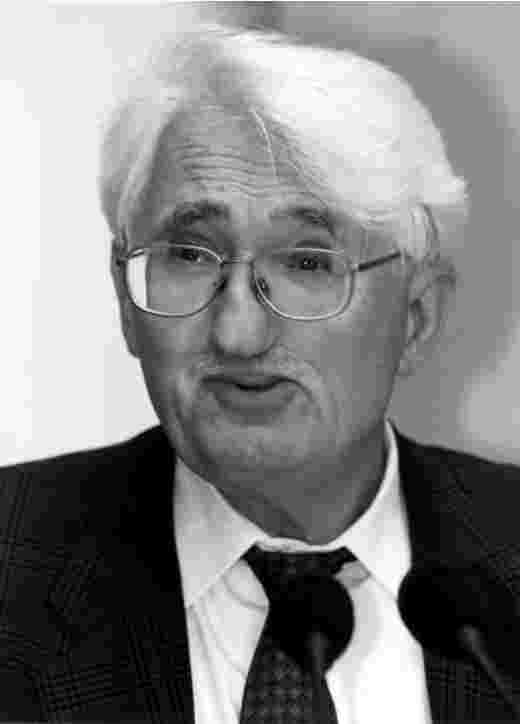
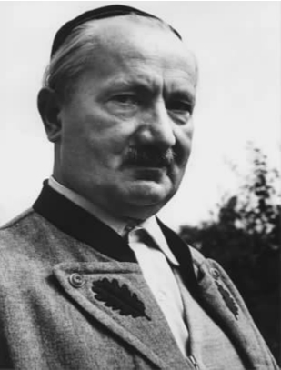
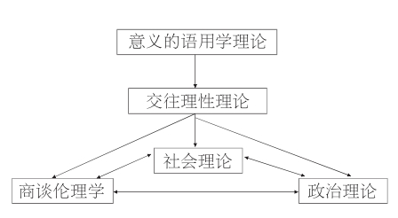

于尔根·哈贝马斯其人
于尔根·哈贝马斯是二战后最为重要、拥有最广泛读者面的社会理论家之一。他的理论著作在人文和社会科学的许多不同领域都产生了重要影响。任何研究社会学、哲学、政治学、法学、文化学或研究英国、德国以及欧洲的学者都无法回避他的名字。他的著作之所以拥有如此广泛的影响力，主要有以下几个原因。首先，哈贝马斯是个跨学科理论家。他的学术涉猎之广令人惊叹。社会学家马克斯·韦伯（1864—1920）曾经提到过一种“没有灵魂的专家”，这种人作为学者从来不去尝试超越自己狭仄的专业领域，而哈贝马斯恰恰与这类人相反。他的研究冲破了学科的界限，完全不像大多数研究人员和学者那样螺蛳壳里做道场。对于他的思想，大多数读者只能从其著作中窥豹一斑。其次，哈贝马斯在五十多年的学术生涯中撰写了大量的作品，他不仅是公认的社会政治理论家，还是当今欧洲首屈一指的公共知识分子。他是德国左派民主主义的元老与灵魂人物，在捍卫自己哲学原则的同时，积极以公民而非学者身份参与到德国和欧洲公共领域对文化、道德、政治等普遍性话题的批判中去。
为了使本书尽量精简，我对于哈贝马斯的生平不作详述。个中原因不在于哈贝马斯的一生不精彩——虽然学者的生平很少能称得上引人入胜，而在于我还是认为作品比作者本人重要。（当然，我也不会简略到像马丁·海德格尔写哲学家亚里士多德那样，在专著中就其生平仅漫不经心地写下：“他生于斯地斯时，工作过，然后辞世了。”）哈贝马斯生平所经历的里程碑式的历史事件影响并激发了他的著述，1945年二战结束、德意志联邦共和国从经济与社会废墟中诞生、冷战、1968年学生抗议运动、1989年柏林墙倒塌以及苏联解体等事件影响尤甚。

图1 于尔根·哈贝马斯
1929年，哈贝马斯出生于杜塞尔多夫。他在一个德国中产阶级家庭中长大，家人识时务地适应了纳粹政权，但也谈不上拥护纳粹。哈贝马斯的政治观点最初形成于1945年，他十六岁的时候。二战行将结束之时，哈贝马斯与当时几乎所有身体健康的德国同龄青少年一样，加入了希特勒青年团。战后，在观看了纳粹屠犹的纪录片并经历了纽纶堡审判之后，他终于看清了奥斯威辛的骇人事实和纳粹当权期间德国民众在道义上的集体沦丧。
青年时期，哈贝马斯曾在哥廷根大学、苏黎士大学和波恩大学学习过哲学。那时他谈不上激进。1949年至1953年间，他沉浸于马丁·海德格尔的著作中。但是，很快便对海德格尔幻灭了。这主要不是因为海德格尔曾经是纳粹党成员并公开支持纳粹党，而是因为他后来回避这个历史问题，拒绝对其行为表示任何忏悔，拒绝承认真相然后将这一页翻过去。1949年，德意志联邦共和国第一届政府成立，由保守派的康拉德·阿登纳主政。对海德格尔，青年哈贝马斯一开始满怀期待与热情，但随即便感到了失望和上当；对阿登纳政权他的态度也经历了这样的转变。在他看来，这个政权代表了一个集体对不光彩历史的蓄意否认和留恋。

图2 马丁·海德格尔。求学期间，哈贝马斯研究过他的著作。后来，哈贝马斯对海德格尔在其纳粹党员身份问题上保持沉默持激烈批判态度。
1954年，哈贝马斯凭研究德国唯心主义哲学家弗里德里希·谢林的论文而获博士学位。之后，他便转向了赫伯特·马尔库塞和早年卡尔·马克思的作品，两年后在法兰克福的社会研究院成了哲学家西奥多·W.阿多诺的第一位研究助手。哈贝马斯同情他在法兰克福的老师阿多诺和马克斯·霍克海默的经历，这两个人都有德国犹太人血统，因此两人对于德国传统在归属感上持有可以理解的矛盾情绪。从两人身上，哈贝马斯学会了如何批判地认同自己祖国的传统，用他自己的话来说，这使他“以自我批判的精神、怀疑主义的态度、被欺骗过的人的清醒的头脑去继承德国的传统”。（《自主与团结》，第46页）在这一阶段，哈贝马斯的著作变得更为激进，对于马克思有更多的认同。对于霍克海默的偏好来说，这便过分了。这位法兰克福研究院院长反感哈贝马斯不加掩饰的马克思主义观点，对哈贝马斯暗地里下了逐客令。1958年，哈贝马斯离开法兰克福去了马堡大学，并在1961年取得了该校的任教资格。后来，他成了海德堡大学的哲学教授，并于1964年又回到法兰克福大学担任哲学和社会学教授一职。在这段政治动荡时期，哈贝马斯与学生激进分子却产生了龃龉，这件事在当时众所周知。虽然哈贝马斯对于这些学生在总体上持同情态度，但在当时，他具有挑衅意味地把这些学生所持有的与所有权威都彻底对立的态度斥为“左派法西斯主义”。从1971年到1983年，他都在施塔恩贝格的马克斯·普朗克研究院当院长。1983年，哈贝马斯回到法兰克福大学教授哲学，并在此建立了他作为西德主要社会理论家和受人尊重的民主主义左派发言人的地位。
图3 康拉德·阿登纳，德意志联邦共和国第一任总理。
1989年11月柏林墙倒掉了，哈贝马斯亲眼见证了随之而来的德国统一。对于德国统一，哈贝马斯和某些人一样，对其统一进程的推进方式持激烈的批评态度。90年代早期，哈贝马斯对于美国政治哲学家罗尔斯的著作、他的自由主义观点以及美国的宪政民主兴趣与日俱增。从左边批评哈贝马斯的人往往对他一生的学术活动进行漫画式的描述，根据这类描述，他的一生始自马克思主义式的对于资本主义的批判，终于对美式自由民主的捍卫。这一漫画式概括虽然表面上合理，但仍然肤浅，究其原因，乃在于未能理解哈贝马斯复杂的政治与思想立场。哈贝马斯不仅是马克思主义批判家，更是马克思主义的批判者他对资本主义和自由主义一直怀有深深的忧惧。但是，尽管他以与自己错误的政治文化见解相决裂的姿态，对西方民主传统作出了趋于负面的评价，他又把西德对西方民主传统的成功照搬说成是西德最伟大的文化成就。正因为这个原因，德国社会学家拉尔夫·达伦多夫言过其实地称哈贝马斯为“阿登纳之嫡孙”（《柏林共和国》，第88—89页），当然，这其中带有戏谑之意然而，尽管哈贝马斯思想非常复杂，过去五十年知识界和政界又经历了风云突变，哈贝马斯的学术观点和政治观点还是保持了高度的连贯性。
关于哈贝马斯对德国的矛盾情感和对民族主义的一贯忧惧，我已经简述了其心理动因与出身因缘。然而，我们应当努力避免把哈贝马斯作品中的这些因素个人化。人们很容易忘却的一点是，近代德国历史与政治的内在复杂性与张力仍然实实在在地存在着。要获得对于历史和现实的生动认识，就去柏林的德国国会大厦透明穹顶上看看吧，在这里可以眺望勃兰登堡门和新建的大屠杀纪念馆，也可以俯视国会议事厅。
图4 大屠杀纪念馆，柏林，背景中是勃兰登堡门和德国国会大厦新建的透明穹顶。
没有哪种社会政治理论能像哈贝马斯的理论那样，如此好地捕捉到这些复杂性和张力，并且如此好地利用它们。哈贝马斯的世界主义，他对欧盟的支持、对民族主义的怀疑、对宪政爱国主义的捍卫，他的道德普遍主义，这些都是基于他的理论体系。哈贝马斯的哲学是纯粹德国式的，同时他的哲学眼界又丝毫不受限于德国或德国哲学。
1994年从法兰克福大学的职位退休之后，哈贝马斯便在施塔恩贝格生活和从事著述，也在美国兼职讲学。他仍然定期发表文字，还一如既往地积极评论政治和文化。近期他的文章涵盖了各种主题，如生物伦理学、基因工程、伊拉克、恐怖主义、世界主义和“9·11事件”之后的美国外交政策。
本文主要讨论哈贝马斯的成熟理论，即他从1980年至今的作品。对于他偶尔发表的政治评论文章我只是一笔带过。这种安排并不是在暗示哈贝马斯作为公共知识分子的一生和他作为学者的生涯孰轻孰重，只是由于他的理论较其政治观点和文化评论更难懂，后者是写给外行读者看的，不用嵌入理论系统之内。
哈贝马斯以一种地道的德国方式、一种现在看来已有几分不合潮流的方式坚持并传播着自己的宏大理论。对于现代社会的本质、现代社会面临的问题，以及语言、道德、伦理、政治、法律在现代社会中的位置等，哈贝马斯提出了一些重大问题，而他对这些问题的回答是由多个学科的知识精心编织在一起的是错综复杂又包罗万象的复合体。不仅如此，他的主要理论著作篇幅之长、术语之多令人望而生畏。哈贝马斯并不为入门者写作，第一次读到他著作的读者可能会产生挫败感。又因为哈贝马斯著述的重点都放在整体框架上，所以填补局部细节的工作就经常留待其研究合作者和学术继承人他日完成了。有时论证的个别环节是缺失的，但同时哈贝马斯与其批评者又处于不断的对话状态，通过经常性地重述观点来回应批评者，并且对理论作一些细微的、意义并非总是一目了然的调整。基于以上原因，如果缺乏对哈贝马斯理论的总体了解，不知道哪些是其理论主干，哪些又属于旁枝末节，读者就很容易迷失阅读的方向。本书的写作目的之一，就是想为读者勾画哈贝马斯理论的主要脉络，方法便是将其著述的不同部分置于一个整体化的背景中。为了达到这个目标，我首先在此给出哈贝马斯全部成熟著作的体系提纲。这个提纲包括了五个研究专题：
一、意义的语用学理论
二、交往理性理论
三、社会理论专题
四、商谈伦理学专题
五、民主理论和法律理论（政治理论）专题
以上每个研究专题都相对独立，在各不相同的知识领域有所创新。但同时，每一部分又都同所有其他部分存在着或多或少的系统性联系。
哈贝马斯的意义语用学理论和交往理性理论，一同为他的社会学、伦理学、政治学理论提供了前导性理念。另一方面，后面三个研究专题之间又能起到相互支撑作用。我之所以称它们为研究专题，是因为它们仍在进行之中。每个专题都通过融合不同学科的真知灼见，回应一系列不同的问题。在本书末尾的附录部分，我为每个专题提供了一个简短的概述。在下面的章节中，我将大致沿着哈贝马斯进行构思的时间线索来探讨这些专题。

图5 哈贝马斯的研究专题概览